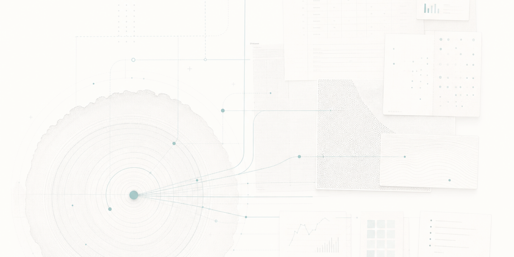
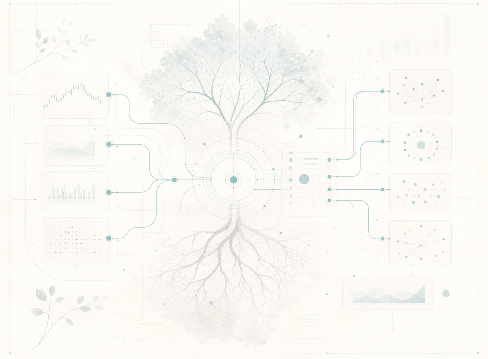

Community growth in 90 days

Case Study · GinFX
From Market Movement to Measurable Trading Platform Growth
GinFX had a strong trading product and offered daily market opportunities. OM Digital built the workflow that converted market movement into education, community prompts, publishing cadence, and measurable platform activity.
Book a 20-minute walkthroughHigher activity across Telegram
Stronger platform activation
Sustained volume expansion
The Challenge
Relevancy decays quickly in active markets.
GinFX needed a system that could identify useful market developments, convert them into educational and product-aligned communication, and distribute them consistently without depending on manual daily production.
What OM Digital Built
OM Digital built an always-on market communication workflow for GinFX. The system monitored relevant market developments, filtered high-signal topics, converted them into educational content and community prompts, and used performance data to guide the next cycle. The workflow gave GinFX a repeatable way to move with the market without building a large internal marketing operation.
Market Signals
Market developments were monitored and filtered for GinFX’s audience.
Education & Prompts
High-signal topics became educational content and community prompts.
Publishing Cadence
Approved communication moved into the right channels with consistent cadence.
Performance Feedback
Content, community, and activation data informed what came next.
The System in Action
Every day, the system monitored relevant market developments and filtered them for GinFX’s audience. High-signal topics were converted into educational content, community prompts, and product-aligned messaging. Publishing infrastructure then moved approved communication into the right channels, supporting Telegram growth, platform activity, and trader engagement.
Build a system like thisWhy gold volatility is back in focus
A short market note turned into a timely education post for active traders.
What leverage changes in choppy sessions
A practical explainer helped traders connect market conditions to platform usage.
Where are traders watching support today?
A Telegram prompt gave the community a reason to respond and return.
Trade major FX pairs from mobile
Product messaging was integrated into useful market context rather than isolated promotion.

The Results
In a 90-day trading platform growth project, the system supported community growth from 1,350 to 35,000 Telegram members, approximately 30x higher community engagement, approximately 12x monthly active users, and sustained month-on-month trading volume growth.
90-day community growth
More active conversation loops
Stronger activation
Sustained month-over-month lift
Build the Workflow Behind Your Market
Market movement creates opportunity every day. Most platforms capture only a fraction of it.
Map a market communication workflow for your platform.